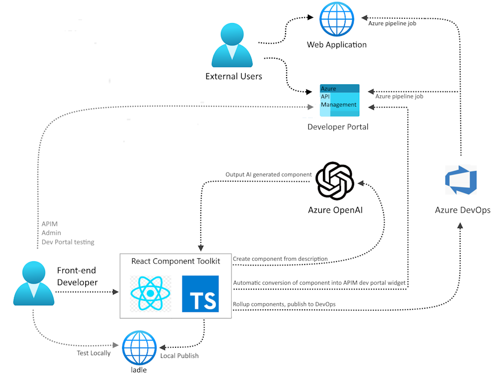

Awesome AZD Templates
A community-contributed templates gallery
Contribute Your Template! üôèFilters
64 sitesFeatured Templates
A sample app for the Retrieval-Augmented Generation pattern running in Azure, using Azure Cognitive Search for retrieval and Azure OpenAI large language models to power ChatGPT-style and Q&A experiences.

This is a quickstart for creating a ChatGPT Plugin using Python and Azure.
A blueprint for getting a React web app with a Java API and a MongoDB database on Azure. The blueprint includes sample application code (a ToDo web app) which can be removed and replaced with your own application code. Add your own source code and leverage the Infrastructure as Code assets (written in Bicep) to get up and running quickly. This architecture is for running containerized apps or microservices on a serverless platform.

A blueprint for getting a React web app with a Node.js API and a MongoDB database onto Azure. The blueprint includes sample application code (a ToDo web app) which can be removed and replaced with your own application code. Add your own source code and leverage the Infrastructure as Code assets (written in Bicep) to get up and running quickly. This architecture is for running containerized apps or microservices on a serverless platform This architecture is for running containerized microservices without managing the servers.
A blueprint for getting a React.js web app with Python (FastAPI) API and a MongoDB API in Cosmos database onto Azure. The frontend, currently a ToDo application, is designed as a placeholder that can easily be removed and replaced with your own frontend code. This architecture is for running containerized apps or microservices on a serverless platform.
A blueprint for getting a React.js web app with a Node.js API and a MongoDB database on Azure. The blueprint includes sample application code (a ToDo web app) which can be removed and replaced with your own application code. Add your own source code and leverage the Infrastructure as Code assets (written in Bicep) to get up and running quickly. This architecture is for running Kubernetes clusters without setting up the control plane.
A blueprint for getting a React web app with a C# API and a MongoDB database on Azure. The blueprint includes sample application code (a ToDo web app) which can be removed and replaced with your own application code. Add your own source code and leverage the Infrastructure as Code assets (written in Bicep) to get up and running quickly.
A blueprint for getting a React web app with a C# API and a SQL database on Azure. The blueprint includes sample application code (a ToDo web app) which can be removed and replaced with your own application code. Add your own source code and leverage the Infrastructure as Code assets (written in Bicep) to get up and running quickly.
A blueprint for getting a React.js web app with a Java API and a MongoDB database on Azure. The blueprint includes sample application code (a ToDo web app) which can be removed and replaced with your own application code. Add your own source code and leverage the Infrastructure as Code assets (written in Bicep) to get up and running quickly. This architecture is for hosting web apps and APIs without worrying about the infrastructure.
A blueprint for getting a React web app with a Node.js API and a MongoDB database on Azure. The blueprint includes sample application code (a ToDo web app) which can be removed and replaced with your own application code. Add your own source code and leverage the Infrastructure as Code assets (written in Bicep) to get up and running quickly. This architecture is for hosting web apps and APIs without worrying about the infrastructure.

A blueprint for getting a React web app with a Node.js API and a MongoDB database on Azure. The blueprint includes sample application code (a ToDo web app) which can be removed and replaced with your own application code. Add your own source code and leverage the Infrastructure as Code assets (written in Terraform) to get up and running quickly. This architecture is for hosting web apps and APIs without worrying about the infrastructure.

A blueprint for getting a React.js web app with Python (FastAPI) API and a MongoDB API in Cosmos database onto Azure. The blueprint includes sample application code (a ToDo web app) which can be removed and replaced with your own application code. Add your own source code and leverage the Infrastructure as Code assets (written in Terraform) to get up and running quickly. This architecture is for hosting web apps and APIs without worrying about the infrastructure.
A blueprint for getting a React.js web app with Python (FastAPI) API and a MongoDB API in Cosmos database onto Azure. The blueprint includes sample application code (a ToDo web app) which can be removed and replaced with your own application code. Add your own source code and leverage the Infrastructure as Code assets (written in Bicep) to get up and running quickly. This architecture is for hosting web apps and APIs without worrying about the infrastructure.

Rock, Paper, Orleans (RPO) is a game built using dotnet, Orleans, and runs in Azure.The idea behind RPO is that you write a "player bot" in which you implement your player logic.
This repos serves as quick-start project showcasing SAP Cloud SDK for JavaScript OData consumption running on Azure App Services. Its primary purpose is to set you up for success for your SAP extension project on Azure and reduce the lead time to your first successful deployment as much as possible with developer friendly commands.
Deploy your Django web application with Microsoft Azure, for scale, using a cloud architecture with integrated monitoring and load testing.
A sample chat app that uses Python and the Flask framework to stream ChatGPT completions as server-sent events to a simple frontend.

A sample that uses Java Spring framework to build ChatGPT-style application running in Azure Spring Apps.

A blueprint for getting a React web app with a C# API and a SQL database on Azure. The blueprint includes sample application code (a ToDo web app) which can be removed and replaced with your own application code. Add your own source code and leverage the Infrastructure as Code assets (written in Bicep) to get up and running quickly. This architecture is for hosting static web apps with serverless logic and functionality.
A blueprint for getting a React web app with a Node.js API and a MongoDB database on Azure. The blueprint includes sample application code (a ToDo web app) which can be removed and replaced with your own application code. Add your own source code and leverage the Infrastructure as Code assets (written in Bicep) to get up and running quickly. This architecture is for hosting static web apps with serverless logic and functionality.
A blueprint for getting a React.js web app with Python (FastAPI) API and a MongoDB API in Cosmos database onto Azure. The frontend, currently a ToDo application, is designed as a placeholder that can easily be removed and replaced with your own frontend code. This architecture is for hosting static web apps with serverless logic and functionality.

A blueprint for getting a React web app with a Java API and a Azure Database for PostgreSQL - Flexible Server on Azure. The blueprint includes sample application code (a ToDo web app) which can be removed and replaced with your own application code. Add your own source code and leverage the Infrastructure as Code assets (written in Bicep) to get up and running quickly. This architecture is for hosting web apps and APIs without worrying about the infrastructure.
A blueprint to easily and quickly create and deploy your first scalable and secure WordPress site to Azure, leveraging Azure Container Apps with Azure Database for MariaDb.
Other Templates

Unleash the power of Azure OpenAI to your application developers in a secure & manageable way with Azure API Management.
A Teams Chatbot running behind a Firewall that leverages OpenAI to call private APIs.

Demonstration of how to leverage Azure OpenAI and Cognitive Search to enable Information Search and Discovery over organizational content.
A base Azure Kubernetes Service template with placeholders to include the application source code (no application source code included) and Kubernetes manifest files.
A blueprint to easily and quickly create and deploy your product documentation in Docusaurus using Azure Container Apps.
A sample that uses a C# Function App with native Service Bus bindings to both add and react to Queued Messages
A reference architecture and components for building enterprise-grade modern composable frontends (or micro-frontends) and cloud-native applications. It is a collection of best practices, architecture patterns, and functional components that can be used to build and deploy modern JavaScript applications to Azure.
A complete event-driven application that includes everything you need to build, deploy, and monitor an Azure solution.
A simple JSON API using the Python FastAPI app framework, designed for deployment on Azure Container Apps. Includes auto-configuration of gunicorn with uvicorn worker count based on CPUs available.

A simple FastAPI app deployed to Azure Functions. Can also be run and debugged locally with the Azure Functions Core Tool emulator.
A FastAPI app deployed as a secured Azure Function with an API Management Policy in front, set up such that API calls require a subscription key but auto-generated documentation is publicly viewable. Project also includes 100% test coverage with Pytest plus a development workflow with ruff, isort, and black.
A sample web app using FastAPI, htmx, and TailwindCSS that demonstrates dynamic design. Does not require a database provision.

A simple JSON API using the Python Flask framework, designed for deployment on Azure Container Apps.

A Charts API that renders PNGs of bar and pie charts, built with Python Flask, APIFlask, and matplotlib. Can be run locally with Docker and then deployed to Azure Container Apps with an Azure CDN in front.
A simple photos website written with Python Flask and Bootstrap. Can be run locally with Docker and then deployed to Azure Container Apps with an Azure CDN in front.
A survey app written with the Python Flask framework which uses Flask-SQLAlchemy with a PostgreSQL database. Can be developed locally with Docker Compose and then deployed to Azure Container Apps (using KeyVault SDK for Flask secrets).
This sample shows how to take text documents as a input via BlobTrigger, does Text Summarization processing using the AI Congnitive Language service, and then outputs to another text document using BlobOutput binding.
This sample shows how to take text documents as a input via BlobTrigger, does Text Summarization processing using the AI Congnitive Language service, and then outputs to another text document using BlobOutput binding. Uses Azure Functions Python v2 programming model.
A complete hello-world application that includes everything you need to build, deploy, and run an Azure Spring Apps solution.
A web application used for hosting, sharing, and interacting with Jupyter Notebooks via Mercury, hosted on Azure Container Apps.

Create microservice to demonstrate Dapr's bindings API to work with external systems as inputs and outputs. The service listens to input binding events from a system CRON and then outputs the contents of local data to a PostgreSQL output binding.
Create a microservice app to demonstrate Dapr's bindings API to work with external systems as inputs and outputs. The service listens to input binding events from a system CRON and then outputs the contents of local data to a postgreSQL output binding.
Create a microservice app to demonstrate Dapr's bindings API to work with external systems as inputs and outputs. The service listens to input binding events from a system CRON and then outputs the contents of local data to a postgreSQL output binding.
A complete microservice application featuring Dapr Pub-Sub, deployed to Azure Container Apps and Azure Service Bus Topics with dead-lettering support.
A complete microservice application featuring Dapr Pub-Sub, deployed to Azure Container Apps and Azure Service Bus Topics with dead-lettering support.
A complete microservice application featuring Dapr Pub-Sub, deployed to Azure Container Apps and Azure Service Bus Topics with dead-lettering support.
Create two microservices that communicate using Dapr's Service Invocation API. The Service Invocation API enables your applications to communicate reliably and securely by leveraging auto-mTLS and built-in retries.
Create two microservices that communicate using Dapr's Service Invocation API. The Service Invocation API enables your applications to communicate reliably and securely by leveraging auto-mTLS and built-in retries.
Create two microservices that communicate using Dapr's Service Invocation API. The Service Invocation API enables your applications to communicate reliably and securely by leveraging auto-mTLS and built-in retries.

A Python Django app on App Service with a PostgreSQL flexible server database. Database access is restricted to Azure IPs, and all administrative secrets are stored in Key Vault.
A restaurants review web app that uses whitenoise for static assets and PostgreSQL for the database. Ready for deployment on App Service with a PostgreSQL Flexible Server inside a VNet.

A space tourism web app that uses PostgreSQL for the database. The web app is containerize and deploy with Azure Container Apps with secrets managed by Azure Key Vault
A Python Flask app on App Service with a PostgreSQL flexible server database. Database access is restricted to Azure IPs, and admin password is generated randomly
A restaurants review web app with a PostgreSQL database, written in the Python Flask framework plus SQL-Alchemy plus Alembic for database interactions. Ready for deployment on App Service with a PostgreSQL Flexible Server inside a VNet.
- 
A sample demo for building and testing react components and includes a set of unique features including AI component generation and automatic conversion to Azure APIM Widgets
A multi-region enterprise web app with a 99.9% SLO and a focus on 12-factor apps and the well-architected framework. The sample app creates a concert booking application.
Starter solution to process Service Bus messages to Dataverse, C# for the Azure Functions app processing the messages, Azure Service Bus for the reception of the messages, and Azure Monitor for monitoring and logging.

A tiny, no-frills, template to deploy Python's Flask web framework to Azure App Service in the free tier.
A tiny, no-frills, template to deploy Python's Streamlit web framework to Azure App Service in the free tier.
Spring PetClinic application using a set of Azure solutions. Azure App Service for app hosting, Azure Database for MySQL for storage, Azure Key Vault for securing secret and Azure Application Insights for monitoring and logging.
A FastAPI app that renders map images for the given location. Deployed as a secured Azure function with an Azure CDN in front for caching.